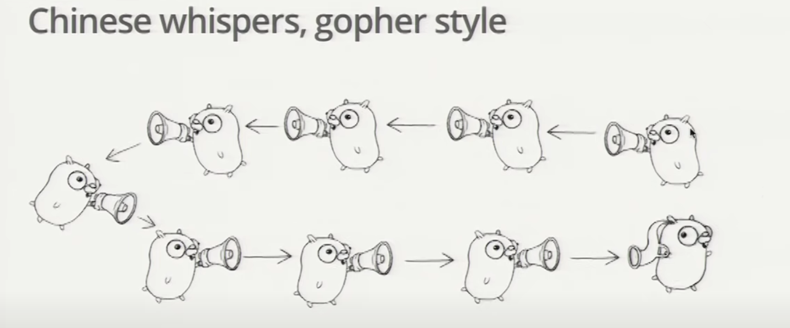
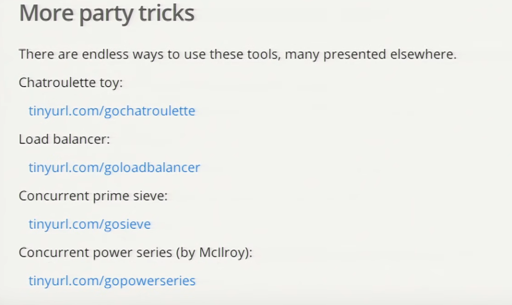
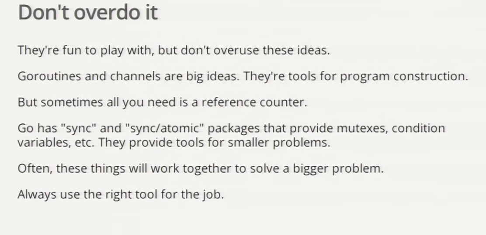

- Concurrency Patterns
- A boring function
- Go Routines
- Channels
- Boring Channel
- Boring function that returns a receive channel
- Channels as a handle on a service
- Multiplexing
- Restoring Sequence
- Select Channel
- Fain-in (Multiplexing) again
- Timeout using Select
- Timeout for whole conversation using Select
- Quit channel
- Receive on Quit Channel
- Daisy-chain
- Systems Software
- Google Search: A fake framework
- Google Search 1.0
- Google Search 2.0
- Google Search 2.1
- Avoid Timeout
- Summary
- One advise:
- Conclusion
Concurrency Patterns
- Concurrency is the composition of independently executing processes.
- Concurrency is a way to structure software, particularly as a way to write clean code that interacts well with the real world.
-
Concurrency is not parallelism.
-
Concurrency is not parallelism, although it enables parallelism.
- If you have only one processor, your program can still be concurrent but it cannot be parallel.
- On the other hand, a well-written concurrent program might run efficiently in parallel on a multi-processors.
A boring function
- boring function is to print a message to the console and sleeps for a random amount of time in milliseconds.
-
main function spawn the boring function and waits for 2 seconds before exiting.
Go Routines
- It's an independently executing function, launched by a go statement.
- It has its own call stack, which grows and shrinks as required.
- It's very cheap. It's practical to have thousands, even hundreds of thousands of goroutines.
- It's not a thread.
- There might be only one thread in a program with thousands of goroutines
Channels
- Think of a bucket chain
- 3 components: sender, buffer, receiver
- The buffer is optional
- Channels are the pipes that connect concurrent goroutines.
- unbuffered channel is blocked when no data sent or received
Synchronization
- When the main function executes <-c, it will wait for a value to be sent.
- Similarly, when the boring function executes c <- value, it waits for a receiver to be ready.
- A sender and receiver must both be ready to play their part in the communication. Otherwise, we wait until they are.
- Thus channels both communicate and synchronize.
Buffered Channel
- A buffered channel is a channel with a buffer.
// buffered channel with a capacity of 10
ch := make(chan int, 10)
- Buffering removes synchronization.
- Buffering makes them more like Erlang's mailboxes.
- Buffered channels can be important for some problems, but they are more subtle to reason about.
Boring Channel
| boring communication |
Boring function that returns a receive channel
| return a receive channel |
Channels as a handle on a service
| channel as a handle |
Multiplexing
These programs make Joe and Ann count in lockstep. We can instead use a fan-in function to let whosoever is ready to talk.

| multiplexing |
Restoring Sequence
- Send a channel on a channel, making goroutine waits its turn.
- Receive all messages, then enable them again by sending on a private channel.
- First we define a message type that contains a channel for reply
type Message struct {
str string
wait chan bool
}
| Restoring Sequence |
Select Channel
- A control structure unique to concurrency.
- The reason channels and goroutines are built into the language.
- The select statement provides another way to handle multiple channels.
- It's like a switch, but each case is a communication:
- All channels are evaluated.
- Selection blocks until one communication can proceed. which then does.
- If multiple can proceed, select chooses pseudo-randomly.
- A default clause, if present, executes immediately if no channel is ready.
select {
case <-ch1:
fmt.Println("ch1")
case <-ch2:
fmt.Println("ch2")
default:
fmt.Println("default")
}
Fain-in (Multiplexing) again
Rewrite our original fan-in function. Only one goroutine is needed.
Old implementation:
func fanIn(input1, input2 <- chan string) <- chan string {
c := make(chan string)
go func() { for { c <- <-input1 } }()
go func() { for { c <- <- inputs2 } }()
return c
}
We can rewrite it using select statement. Only one goroutine is needed:
func fanIn(input1, input2 <- chan string) <- chan string {
c := make(chan string)
go func() {
for {
select {
case s := <-input1:
c <- s
case s := input2:
c <- s
}
}
}
}
| Fan-in using select |
Timeout using Select
The time.After function returns a channel that blocks for the specified duration. After the duration, it sends the current time, once.
func main() {
c := boring9("Joe")
for {
select {
case s := <-c:
fmt.Println(s)
case <-time.After(1 * time.Second):
fmt.Println("You're too slow.")
return
}
}
}
| timeout using select |
Timeout for whole conversation using Select
Create the timer once, outside the loop, to time out the whole conversation. (In the previous program, we had a timeout for each message)
func main() {
c := boring10("Joe")
timeout := time.After(5 * time.Second)
for {
select {
case s := <-c:
fmt.Println(s)
case <-timeout:
fmt.Println("You talk too much.")
return
}
}
}
| timeout using select |
Quit channel
We can turn this around and tell joe to stop when we're tired of listening to him.
quit := make(chan bool)
c := boring11("Joe", quit)
for i := rand.Intn(10); i >= 0; i-- {
fmt.Println(<-c)
}
quit <- true
select {
case c <- fmt.Sprintf("%s %d", msg, i):
// do nothing
case <-quit:
return
}
| Quit Channel |
Receive on Quit Channel
How do we know it's finished? Wait for it to tell us it's done: receive on the quit channel.
quit := make(chan string)
c := boring12("Joe", quit)
for i := rand.Intn(10); i >= 0; i-- {
fmt.Println(<-c)
}
quit <- "Bye!"
fmt.Printf("Joe says: %q\n", <-quit)
select {
case c <- fmt.Sprintf("%s %d", msg, i):
// do nothing
case <-quit:
//cleanup()
quit <- "See you!"
return
}
| Receive on Quit Channel |
Daisy-chain

| Daisy Chain |
Systems Software
Go was designed for writing systems software. Let's see how the concurrency features come into play.
*Example: Google Search*
Q: What does Google Search do?
A: Given a query, return a page of search results (and some ads)
Q: How do we get the search results?
A: Send the query to Web search, Image search, YouTube, Maps, News, etc., then mix the results
How do we implement this?
Google Search: A fake framework
We can simulate the search function, much as we simulated conversation before.
var (
Web = FakeSearch("web")
Image = FakeSearch("image")
Video = FakeSearch("video")
)
type Result string
type Search func(query string) Result
func FakeSearch(kind string) Search {
return func(query string) Result {
time.Sleep(time.Duration(rand.Intn(100)) * time.Millisecond)
return Result(fmt.Sprintf("%s result for %q\n", kind, query))
}
}
Google Search 1.0
| ggole search |
Google Search 2.0
Run the Web, Image, and Viideo searches concurrently, and wait for all results. No locks. No condition variables. No callbacks.
func Google20(query string) (results []Result) {
c := make(chan Result)
go func() { c <- Web(query) }()
go func() { c <- Image(query) }()
go func() { c <- Video(query) }()
for i := 0; i < 3; i++ {
result := <-c
results = append(results, result)
}
return results
}
| Google Search 2.0 |
Google Search 2.1
Don't wait for slow servers. No locks. No condition variables. No callbacks.
func Google21(query string) (results []Result) {
c := make(chan Result)
go func() { c <- Web(query) }()
go func() { c <- Image(query) }()
go func() { c <- Video(query) }()
timeout := time.After(80 * time.Millisecond)
for i := 0; i < 3; i++ {
select {
case result := <-c:
results = append(results, result)
case <-timeout:
fmt.Println("time out")
return
}
}
return results
}
| Google Search 2.1 |
Avoid Timeout
Q: How do we avoid discarding results from slow servers?
A: Replicate the servers. Send requests to multiple replicas, and use the first response.
func First(query string, replicas ...Search) Result {
c := make(chan Result)
searchReplica := func(i int) { c <- replicas[i](query) }
for i := range replicas {
go searchReplica(i)
}
return <-c
}
| using first function |
| Google Search 3.0 |
Summary
In just a few simple transformations we used Go's concurrency primitives to convert a: - slow - sequential - failure-sensitive
program into one that is:
- fast
- concurrent
- replicated
- robust

One advise:

Conclusion
Goroutines and channels make it easy to express complex operations dealing with: - multiple inputs - multiple outputs - timeouts - failure
And they're fun to use.